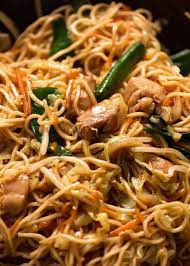

Chow Mein

I want to say that Chow Mein is my favourite noodle-child
but I’m worried that I’ve said that in another recipe
(or two… or three…).
Because there is, after all, some heavy hitting noodle
competition in this big wide world. Pad Thai, Pad See Ew
(Thai Stir Fried Noodles), Singapore Noodles, Yakisoba
(Japanese noodles) – to name just a few.
Ingredients:
- 200g/6 oz chicken breast or thigh fillets
- 4 cups green cabbage
- 1 1/2 tbsp peanut oil
- 2 cloves garlic
- 200g /6 oz chow mein noodles
- 1 carrot
- 1 1/2 cups bean sprouts
- 3 green onions
- 1/4 cup (65 ml) water
Chow mein sauce
- 2 tsp cornflour / cornstarch
- 1 1/2 tbsp soy sauce
- 1 1/2 tbsp oyster sauce
- 1 1/2 tbsp Chinese cooking wine
- 2 tsp sugar
- 1/2 tsp sesame oil
- White pepper
Steps:
SAUCE:
- Mix together cornflour and soy sauce,
then mix in remaining ingredients.
- Alternative: Use 1/3 cup Chinese All
Purpose Stir Fry Sauce, if you have some in stock.
CHICKEN & NOODLES
- Marinate Chicken: Pour 1 tbsp of Sauce over the chicken,
mix to coat, set aside to marinate for 10 minutes.
- Noodles: Prepare the noodles according to the packet
instructions (my pack says soak in boiled water for 1 minute),
then drain.
COOKING:
- Heat oil in wok or large fry pan over high heat.
- Add garlic and stir fry for 10 seconds or until it starts
to turn golden - don't let it burn!
- Add chicken and stir fry until the surface gets a tinge of
browning but inside is still raw - about 1 minute.
- Add the cabbage, carrot, and the white pieces of shallots
(i.e. from the base of the stalk). Stir fry for 1 1/2 minutes
until the cabbage is mostly wilted.
- Add the noodles, Sauce and water*. Stir fry for 1 minute,
tossing constantly.
- Add bean sprouts and remaining shallots/scallions. Toss through
for 30 seconds or until the bean sprouts just start to wilt.
- Remove from heat and serve immediately.